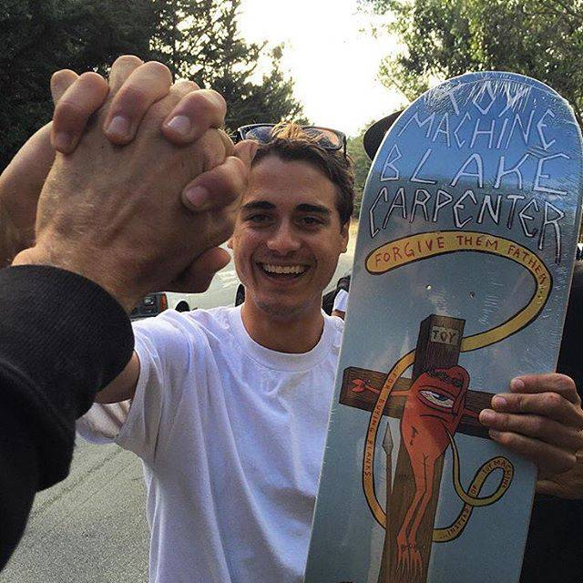
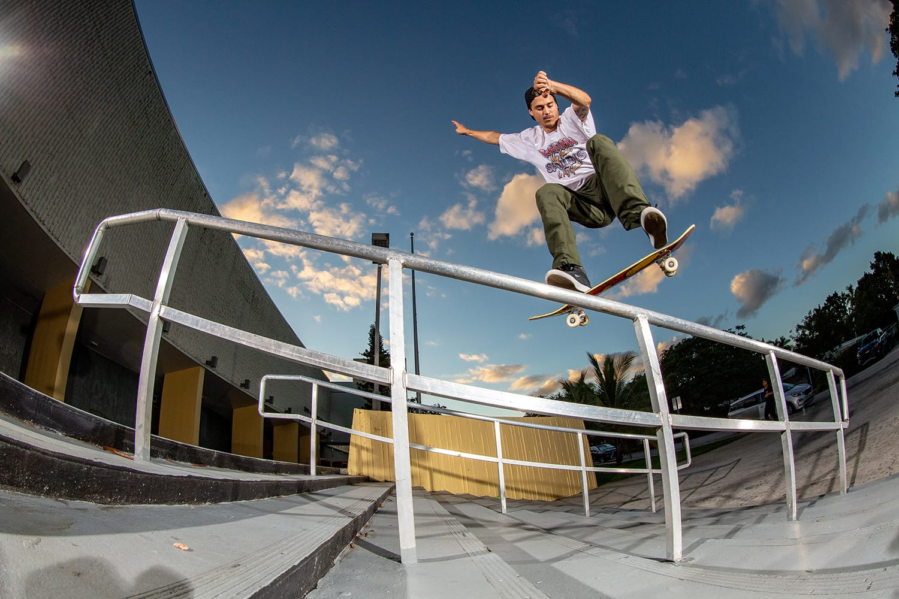

4PLY MAG
March 2021
Blake
Carpenter

By Harrison Lisewski
Here's another statistical analysis & interview featuring Blake Carpenter. Fortunately for anyone that can't switch flip back tail, we aren't really in the business of comparing skaters. With that being said, there might be a worldwide breakdown coming later this decade. This would put Blake at the top of our switch and bump to bar leaderboards while simultaneously having him dead last in transition and manuals.
How you doin’ Blake?
Pretty good man, how about you?
I'm doin' good! Let's talk numbers. How many times have you pooped at the spot?
Put down like 50 ahahah
That's Gangster. What do you think your top tricks are?
Probably like a front heel or something? I think an ollie. There has to be more ollies than anything.
Ollies are at the top with switch back 180.
Fuck yeah. What about front heels?
Yeah then there’s front heel and swith bs flip next.
Top Tricks
Sick to see tricks like switch flip back tail and switch tre lip so high.
When the spots right for it you just fuckin’ do it anyway you know? I dont want to do too many of one trick but at the same time it’s like you might as well do what you can do.
Are you working on anything at the moment? What was up with the Houston trip?
I'm on my own filming this Nike Blazer video part. It's gonna be like a little video with Grant Taylor as the star obviously and then everyone just has footage in blazers. They're the best. They're so good.
Nearly done?
Yeah I started like 5 months ago. I've just been like getting a filmer to come out or lately people are flocking to Miami. If they're coming to town I’ll like race to Miami and skate down there. It's been going good.
I know you’ve mentioned before you don’t end up filming a lot of lines on trips because it takes so much of everyone's time. But someone wanted to know if you 'physically don’t know how to string a line together'.
Yeah I feel like selfish when I go film a line. Especially when it's not as fun. Sometimes it is what it is. Like if I just have my own guy ready whos like let's go to this line spot im like fuck yeah lets do it you know.
So for this Nike thing and you’ve got your own filmer are you filming more lines?
He doesn't have a lens ahaha. It's unfortunate but whatever, I just make the best with what I got. I obviously have way more like personal goals towards like single tricks. I’m not like ‘oh I wanna like go to that spot and I really want to wallie that thing before I do that kickflip crook’. It's like 'No I just wanna crook the bitch' ahaha.
Do you think your skating has changed much since Daylando?
I’d say like, the things that I'm capable of doing, like athletically, I feel like I can do more now. I've been going to some of the shit that I skated back then and I'm like, 'Sick it got easier to skate this shit right now'.
BLAKE OVER TIME
When I look at these charts I always think about how like Jerry Hsu’s Bag of Suck part is mostly switch and nollie because of that ankle injury. Your switch skating dropped off a bit around 2017. Did something happen?
I think so yeah, like actually swear to god. At the end of Chronicles one of the last tricks I wanted to try was switch bigflip front board before I could do them really. It's like this rail that Sean Malto back over crook nollie flipped. It's like a long rail and I just like drove 2 hours straight to it and I went to warm up with like a switch board and on the switch board I just like folded my shit. I just sat right on it on my left ankle. So yeah like deadass that happened. I fucked myself and I never even got it looked at really. That was before I was like down to go get shit checked out and like worked on. And I just worked it myself and it has full range again, its fine.
You take physical therapy more seriously now?
It's real! I’m 28 and about to be 29 and I definitely understand how special it is to do it now. I’m just lookin at Tony Hawk dude, 52 years old and he won’t stop until he dies I don't think. Honestly I get more sore now, but like I know how to skate better because I've been skating longer ahaha. It makes sense. Like I started skating when I was 12. Some people say thats like late but.. 🤷
You rollin’ a fatty?
Yeah you guys have this stuff over there?
Yeah ahaha it's not as good but it does the trick.
I got some in St Kilda one time and it was pretty good.
Do you smoke and skate? Or skate then smoke?
It’s kind of like an all day event.
So you can do everything that you do stoned as hell?
I don’t think I ever have not been. Every single trick.
Noted.
Don’t make it a highlight but you can put it in there.
100% of tricks done stoned.
There’s probably kids that read this right?
It is what it is. I just grew up like that. We were just out having fun just like laughing 'til we cried and then getting out of the car and just fuckin' skating or whatever.
Whats good with all the bump to bars?
I just like skating them, testing the limits. I always wanted to ollie high.
You’re not much of a tranny guy, you think its the best way for street folk to get that air time?
Yeah forreal, just testing the wings. I grew up at this park with minimal tranny and never got my ramp legs. Been working on it, tranny part coming when I’m 35.
Artificial inteligence CGI rendered image of Blake when he's 35
Video Numbers
- 286 - Tricks logged for this article
- 141 - Unique tricks (49%)
- 63 - Tricks done in/out of banks (22%)
- 7 - Switch flip BS tails on handrails (7 were on handrails, 4 were in a row)

- 50 - Poops at the spot
- 22 - Tricks down stairs
- 932 - Stairs skated (including handrails)
- 20 - Flatground tricks
- 2 - Manual tricks

- 45 - Tricks on wheelchair ramps (15%)
- 24 - Ledge tricks
- 96 - Handrail tricks (33.5%)
- 52 - Switch handrail tricks (54% of all handrail tricks)

- 1 - of the best dismounts I've ever seen
- 0 - Transition tricks
- 50:50 - Kickflip to heelflip ratio
- 12 - Switch tre flips
- 63 - Slow mo tricks (22%)
What was good with Asphalt Yacht Club?
Basically they started with so much money, Stevie and Stefan were the co owners along with a bunch of investor millionaire guys. It was going so good and all the money was flowing into it and they were making clothes but they weren’t that sick and everyone was wearing them, we were all doing it. We were going on trips and it was fucking tight. It was like a good company to ride for, riley and figgy and nyjah. Nyjah made it so big our demos were like fucked. Then one day I just got an offer from Nike and I just went to Nike apparel.
Paris Hilton was at the launch party?
She was paid to party at the launch party along with John Stamos and other randoms. It was a weird one brotha.
Fried ahaha. Are they still around?
We were just talking about it the other day and we were looking on Instagram trying to check. They don't have an Instagram anymore ahaha. They were funny though. We had so much fun on those trips.
Any yachts?
Dude we were staying at this mansion in Miami and Stevie just like pulled up a yacht on the dock and we went out and he had strippers and shit on it and we were just like partying on the yacht. We had to uphold the name.
How could you not?
Exactly.
How did you end up on King of the Road? You were flow then right?
I think they just had a stint where some people were hurt and somebody didn’t want to go on KOTR and they were like let's bring the hungry flow guys.
Is it more fun or hellish?
Its fun for like 30 minutes of the day when you roll up to a spot and you’re getting to hypnotize chickens and shit. I was getting to the point where I would just get mad and sleeping in til 10. Mike would be like 'dude we’re all waiting at the van' or whatever and I'm just like well we cant leave 'til we’re ready to skate so fuck, sorry’ ahaha
What's the worst part?
Exhaustion, pure exhaustion. Two weeks straight of bullshitting and trying to hit everything you possibly can. That's why I didn't skate much on those things 'cause like I didn't want to get hurt on some stupid shit. Your hips are all closed up, you’re sitting in the van like a pile of shit drinking all day its weird.
That sounds like ass.
Yeah it was an experience. I did it twice too. The second time they mic'd us up and like had us act like we were on a reality tv show or something.
The Vice one?
Yeah 'cause Vice had like an actual production crew for every team and they had like bits that they would like almost throw out at you at some points you know. Theyd be like oh uhh this and thats happening over there, we're just like what? You’re trying to make this like a show right now its insane. I mean it was a show. That shit aired for so long.
Did it feel more like a reality show than a skate trip?
A lot of the times. They pull you aside doing an interview about something that just happened or something that will happen. Yeah idk. Im glad I dont gotta go back. I think it's canceled forever.
Video Part Breakdown
How do you know the Pyramid Country guys? You have so much footage in Arizona.
I got in the car with Grant one day to go on a trip, we were driving cross country and I ended up in Arizona and we met up with those guys and it happened to be the Boyish premiere on that weekend. I met all of them and thought ‘these dudes are the sickest, I wanna hang out with them’. I followed them before that premiere and I was like ‘Dude we're gonna be there for that? Holy shit.’

Switch flip front board from Pyramid Country's 'Swimmin in er' - Photo by JD 'Boot' Palmer
Have you ever made a cabinet?
Of course! But all my friends make fun of me because I'm a terrible carpenter. I’ve tried to make quarter pipes and they just come out like so fucked ahaha.
No one's perfect
Yeah but I dabble.
What do you think about aliens?
They're here. They live amongst us.
How do you know?
I’ve seen shit in the sky and just like how fuckin weird certain people are. I don’t know
You think they're pretending to be humans?
They could be. How many live in Australia? A lot.
Yup!
Ahaha they're out there.
Last question. Dinner in front of the TV or at the table?
TV at the table!
If somehow you've made it here and don't already follow the 4PLY Instagram, please do. With enough leverage, Nike might pay us good money for promoting Blazers (one of the best shoes of all time). If you're Nike, check your emails.